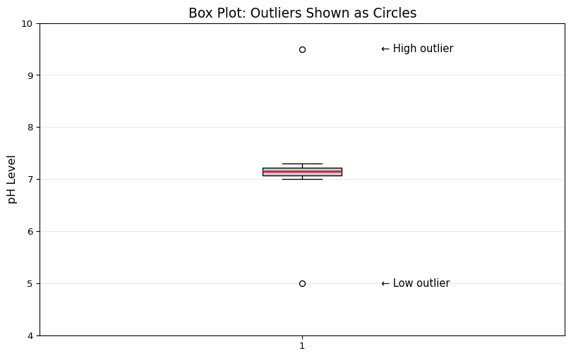

Outliers are data points that are very different from the rest of your data. They’re the “weird” numbers that don’t fit the pattern.
Example: pH readings from a creek: 7.1, 7.2, 7.0, 7.1, 12.3, 7.2
That 12.3 is an outlier! It’s way higher than everything else.
Why Do Outliers Happen?
Outliers can happen for different reasons:
1. Sensor Malfunction 🔧
The sensor glitched or needs calibration
Battery was dying
Sensor got knocked around
2. Real Pollution Event 🚨
Factory dumped chemicals into the stream
Farm fertilizer washed in after a storm
Sewage spill
3. Natural Event 🌧️
Heavy rain changed water chemistry
Algae bloom
Seasonal variation
Your job as a scientist: Figure out which reason it is!
Why Outliers Matter for Water Quality
Outliers are REALLY important because:
They might be pollution! That weird high nitrate reading could mean someone dumped something bad
They mess up your statistics - Remember how the mean got messed up?
They could mean broken equipment - Your sensor might need fixing
They tell a story - What happened that day?
Let’s Spot Some Outliers!
Here’s a simple way to spot outliers by looking at the data:
import matplotlib.pyplot as pltimport numpy as np# Example: pH readings from a stream over 10 days# Most are normal, but Day 8 looks weird!days =list(range(1, 11))ph_readings = [7.2, 7.1, 7.3, 7.2, 7.1, 7.2, 7.1, 9.8, 7.2, 7.1]# Plot the dataplt.figure(figsize=(10, 6))plt.plot(days, ph_readings, marker='o', markersize=10, linewidth=2, color='blue')plt.axhline(y=np.mean(ph_readings), color='red', linestyle='--', linewidth=2, label='Mean (affected by outlier!)')plt.axhline(y=np.median(ph_readings), color='green', linestyle='--', linewidth=2, label='Median (more reliable)')# Mark the outlierplt.scatter([8], [9.8], s=300, color='red', marker='X', zorder=5, label='Outlier!')plt.xlabel('Day', fontsize=12)plt.ylabel('pH', fontsize=12)plt.title('Can You Spot the Outlier?', fontsize=14)plt.legend(fontsize=11)plt.grid(True, alpha=0.3)plt.ylim(6, 11)plt.show()print("pH readings:", ph_readings)print(f"Mean: {np.mean(ph_readings):.2f} (pulled up by outlier)")print(f"Median: {np.median(ph_readings):.2f} (not affected)")print("\nDay 8 is definitely weird! Something happened that day.")
pH readings: [7.2, 7.1, 7.3, 7.2, 7.1, 7.2, 7.1, 9.8, 7.2, 7.1]
Mean: 7.43 (pulled up by outlier)
Median: 7.20 (not affected)
Day 8 is definitely weird! Something happened that day.
Method 1: The IQR Method (Interquartile Range)
This is a fancy way scientists detect outliers. Don’t worry, it’s easier than it sounds!
The idea: Most data should be in a certain range. If a number is way outside that range, it’s an outlier.
How it works: 1. Find Q1 (25th percentile) - 25% of data is below this 2. Find Q3 (75th percentile) - 75% of data is below this 3. Calculate IQR = Q3 - Q1 4. Anything below Q1 - 1.5×IQR is an outlier 5. Anything above Q3 + 1.5×IQR is an outlier
Don’t memorize this! Python will do it for you.
import numpy as np# Example: Nitrate readings from a river# One reading is suspiciously high!nitrate = [2.1, 2.3, 2.2, 2.4, 2.2, 2.3, 15.0, 2.1, 2.2]# Calculate IQRq1 = np.percentile(nitrate, 25) # 25th percentileq3 = np.percentile(nitrate, 75) # 75th percentileiqr = q3 - q1# Calculate outlier boundarieslower_bound = q1 -1.5* iqrupper_bound = q3 +1.5* iqrprint("Nitrate readings (mg/L):", nitrate)print(f"\nQ1 (25th percentile): {q1:.2f}")print(f"Q3 (75th percentile): {q3:.2f}")print(f"IQR: {iqr:.2f}")print(f"\nOutlier boundaries:")print(f" Lower bound: {lower_bound:.2f}")print(f" Upper bound: {upper_bound:.2f}")# Find the outliersoutliers = [x for x in nitrate if x < lower_bound or x > upper_bound]print(f"\nOutliers detected: {outliers}")
A box plot is a graph that shows outliers automatically! It’s like a detective tool for finding weird data.
import matplotlib.pyplot as plt# Example: pH readings with some outliersph_data = [7.1, 7.2, 7.0, 7.3, 7.2, 7.1, 9.5, 7.2, 7.1, 7.0, 5.0, 7.3]plt.figure(figsize=(10, 6))plt.boxplot(ph_data, vert=True, patch_artist=True, boxprops=dict(facecolor='lightblue'), medianprops=dict(color='red', linewidth=2))plt.ylabel('pH Level', fontsize=12)plt.title('Box Plot: Outliers Shown as Circles', fontsize=14)plt.grid(True, alpha=0.3, axis='y')plt.ylim(4, 10)plt.text(1.15, 9.5, '← High outlier', fontsize=11, va='center')plt.text(1.15, 5.0, '← Low outlier', fontsize=11, va='center')plt.show()print("The circles show outliers!")print("The box shows where most of the 'normal' data is.")

The circles show outliers!
The box shows where most of the 'normal' data is.
Reading a box plot: - The line in the middle = Median - The box = Where the middle 50% of data is - The whiskers (lines extending out) = Normal range - The circles = Outliers!
Try It: Detect Outliers
What Should You Do with Outliers?
Once you find an outlier, you have some choices:
Option 1: Keep It ✅
When to do this: - It’s a real measurement (like a pollution event) - You want to study what caused it - It’s important for your research
# Example: Keep the outlier because it's a real pollution eventdata_with_outlier = [2.1, 2.3, 2.2, 15.0, 2.4, 2.2]print("Data with outlier:", data_with_outlier)print(f"Mean: {np.mean(data_with_outlier):.2f}")print("\nWe keep it because it shows a pollution event happened!")
Data with outlier: [2.1, 2.3, 2.2, 15.0, 2.4, 2.2]
Mean: 4.37
We keep it because it shows a pollution event happened!
Option 2: Remove It 🗑️
When to do this: - It’s clearly a sensor error - It’s impossible (like pH of 20) - You want to see typical conditions
# Example: Remove the outlier because it's a sensor errordata_with_outlier = [7.1, 7.2, 7.0, 15.0, 7.2, 7.1]data_cleaned = [x for x in data_with_outlier if x <10] # Remove anything above 10print("Original data:", data_with_outlier)print("Cleaned data:", data_cleaned)print(f"\nMean before: {np.mean(data_with_outlier):.2f}")print(f"Mean after: {np.mean(data_cleaned):.2f}")print("\nMuch better! Now the mean makes sense.")
Original data: [7.1, 7.2, 7.0, 15.0, 7.2, 7.1]
Cleaned data: [7.1, 7.2, 7.0, 7.2, 7.1]
Mean before: 8.43
Mean after: 7.12
Much better! Now the mean makes sense.
Option 3: Investigate It 🔍
Always do this first! - Check your field notes - What happened that day? - Look at weather data - Was there a storm? - Check the sensor - Is it working correctly? - Ask: Is this reading even possible?
Real-World Detective Work
Let’s practice being water quality detectives!
import numpy as npimport matplotlib.pyplot as plt# Scenario: You're monitoring a stream near a farm# Here are nitrate readings over 2 weeksdays =list(range(1, 15))nitrate = [2.1, 2.3, 2.2, 2.4, 2.2, 8.5, 9.2, 3.0, 2.8, 2.9, 2.7, 2.8, 2.9, 2.6]# Plot itplt.figure(figsize=(12, 6))plt.plot(days, nitrate, marker='o', markersize=10, linewidth=2, color='brown')plt.axhline(y=np.median(nitrate), color='green', linestyle='--', linewidth=2, label='Median')plt.axhline(y=10, color='red', linestyle='--', linewidth=2, alpha=0.5, label='EPA Limit')# Highlight the spikeplt.scatter([6, 7], [8.5, 9.2], s=300, color='red', marker='X', zorder=5, label='Spike!')plt.xlabel('Day', fontsize=12)plt.ylabel('Nitrate (mg/L)', fontsize=12)plt.title('Mystery: What Happened on Days 6-7?', fontsize=14)plt.legend(fontsize=11)plt.grid(True, alpha=0.3)plt.show()print("Detective Questions:")print("1. Are Days 6-7 outliers? (YES - much higher than others)")print("2. Are they sensor errors? (Probably NOT - both days show high values)")print("3. What could cause this? (Possible: Heavy rain → fertilizer runoff)")print("4. Should we remove them? (NO - this is real data showing an event!)")print("\nConclusion: This looks like a real pollution event to investigate!")
Detective Questions:
1. Are Days 6-7 outliers? (YES - much higher than others)
2. Are they sensor errors? (Probably NOT - both days show high values)
3. What could cause this? (Possible: Heavy rain → fertilizer runoff)
4. Should we remove them? (NO - this is real data showing an event!)
Conclusion: This looks like a real pollution event to investigate!
Comparing With and Without Outliers
import numpy as np# Example: Creek pH data with one bad sensor readingcreek_ph = [7.1, 7.2, 7.0, 7.2, 14.5, 7.1, 7.2]# Calculate statistics both waysprint("WITH the outlier (14.5):")print(f" Mean: {np.mean(creek_ph):.2f}")print(f" Median: {np.median(creek_ph):.2f}")print(f" Standard Deviation: {np.std(creek_ph):.2f}")# Remove the outlier (14.5 is impossible for creek water)creek_ph_clean = [x for x in creek_ph if x <10]print("\nWITHOUT the outlier:")print(f" Mean: {np.mean(creek_ph_clean):.2f}")print(f" Median: {np.median(creek_ph_clean):.2f}")print(f" Standard Deviation: {np.std(creek_ph_clean):.2f}")print("\nSee how much more accurate the statistics are without the bad reading?")
WITH the outlier (14.5):
Mean: 8.19
Median: 7.20
Standard Deviation: 2.58
WITHOUT the outlier:
Mean: 7.13
Median: 7.15
Standard Deviation: 0.07
See how much more accurate the statistics are without the bad reading?
Your Future: Outliers in Buoy Data
When you deploy sensor buoys in real streams, you’ll see outliers! Some will be:
Equipment issues to fix: - 🔋 Low battery - 🔧 Sensor needs calibration - 📡 Data transmission errors - 🐟 Something bumped the sensor
The skills you’re learning now will help you tell the difference!
Quick Reference: Finding Outliers
# IQR Method (copy this code!)import numpy as npdata = [your_readings_here]# Calculate boundariesq1 = np.percentile(data, 25)q3 = np.percentile(data, 75)iqr = q3 - q1lower = q1 -1.5* iqrupper = q3 +1.5* iqr# Find outliersoutliers = [x for x in data if x < lower or x > upper]print("Outliers:", outliers)
Try It: Multiple Outliers
Key Takeaways
🔍 Outliers = Data points that don’t fit the pattern
⚠️ They could mean: pollution events, sensor errors, or data mistakes
📊 IQR method = Math way to find outliers automatically
📉 Box plots = Visual way to spot outliers (shown as circles)
🤔 Always investigate before removing outliers
✅ Keep outliers if they’re real events worth studying
🗑️ Remove outliers if they’re equipment errors
🌊 Real stream data will have outliers - you need to understand them!
The Decision Tree
When you find an outlier, ask yourself:
Is it possible? (pH of 20 = No, pH of 8.5 = Yes)
What happened that day? (Check notes, weather, etc.)
Does it fit a pattern? (One spike vs multiple high readings)
Is the sensor working? (Check calibration, battery)
Then decide: Keep it, remove it, or investigate more!
Next lesson: We’ll learn about scatterplots - how to see if two things (like pH and nitrate) are related!